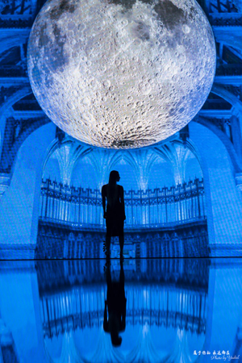

已推荐到博客首页，点击查看更多精彩内容 【另眼看展】仰望月光如水，恍若身在天宫 此博文包含图片 (2018-08-02 12:08:31)转载▼
标签： 冰沁于心 月光如水 网红大月亮 水立方 展览 分类： 天朝帝都
7月中旬，水立方“月光如水”探月展在现场《月光奏鸣曲》、灯光、特效的伴随下惊艳开场。此次在水立方展出的直径10米的“大月亮”，是目前世界上最大的巨型月亮装置，全世界只此一处，绝无仅有！感觉刷爆ins的网红“大月亮”又要火遍京城啊！
【另眼看展】仰望月光如水，恍若身在天宫
是很多，张九龄的一首《望月怀远》更是经典。
这次展览的核心艺术装置便是一个直径十米的巨型月球“月球博物馆”，“月球博物馆”出自于英国知名艺术家卢克杰拉姆（Luke Jerram）之手。
